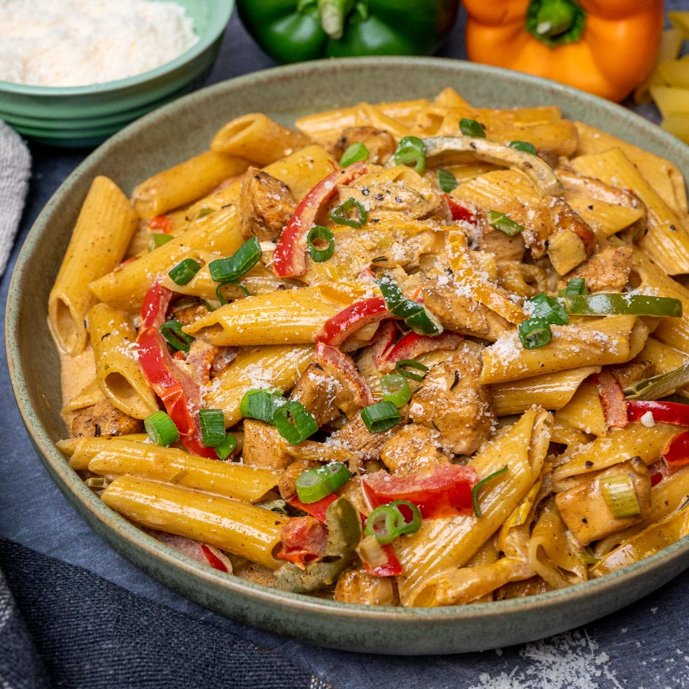

Rasta Pasata

Descrption
Rasta pasta is creamy pasta tossed with Caribbean style jerk chicken and sauteed bell peppers. This dish
is so full of flavor, and makes a great weeknight dinner that can be made in just half an hour! It’s
creamy, rich, spicy, and cheesy.
Ingredients
- 2 cups Penne Pasta
- 2 chicken breasts or Your Choice of Meat
- 2 cups Mozzarella (or cheddar) cheese grated
- 1 1/2 -2 cups coconut milk
- 1 packet of Knorr's Parma Rosa sauce mix
- 2 bell peppers (1 green and 1 red) seeded and sliced
- 1 tsp hot Jamaican jerk seasoning
- 1 garlic clove minced
- 1/2 chopped onion
- 1 tbsp olive oil (or 2 tbsp butter)
- A bit of ground pepper and salt
Steps
- Boil penne pasta until cooked but still firm then drain.
- Sautee minced garlic with chopped onions and bell peppers in olive oil or butter in sauce pan over medium heat
- Add jerk seasoning, then coconut milk (paying close attention to prevent from burning), adding a bit of salt and ground pepper to taste
- Add parma rosa and slowly stir in cheese until completely melted
- Add the Chicken then penne pasta and thoroughly mix, combining until it has thicken